ABOUT

Hi! I'm Ashish Shrestha. I was born in Nepal and currently residing in California, US. I've Bachelor's Degree in Geomatics Engineering and I'm a certified Geomatics Engineer.
As a GIS Analyst and Cartographer, my primary areas of expertise lie in spatial data analysis, data management, and digital map making. I have honed my skills as an experienced user of various mapping software, including ArcGIS, QGIS, and other tools commonly employed in the field. In addition to my technical proficiency, I possess a strong background in GIS analysis, data visualization, and cartographic design, allowing me to deliver comprehensive and visually appealing geospatial solutions.
Community Map Boards
Community Map Boards highlighting Humanitarian Open Spaces from Bheemdutta and ChanguNarayan Municipality.
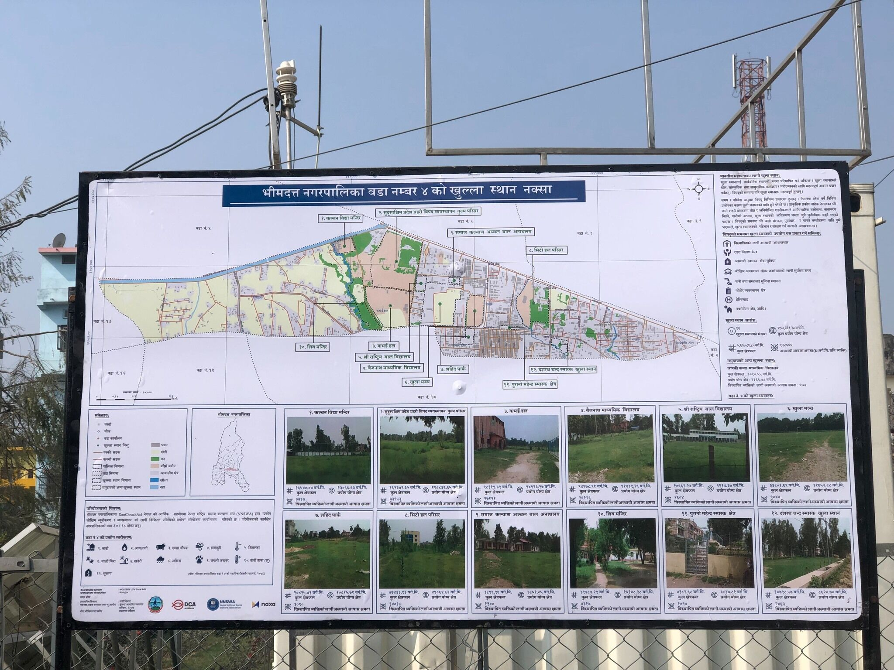
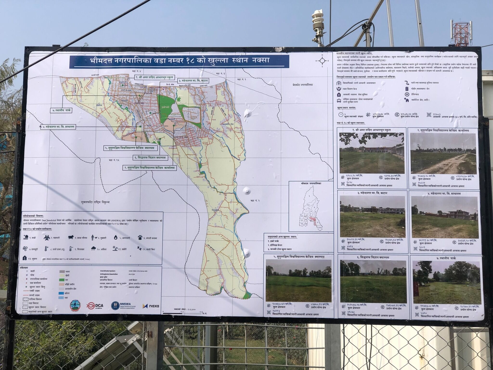
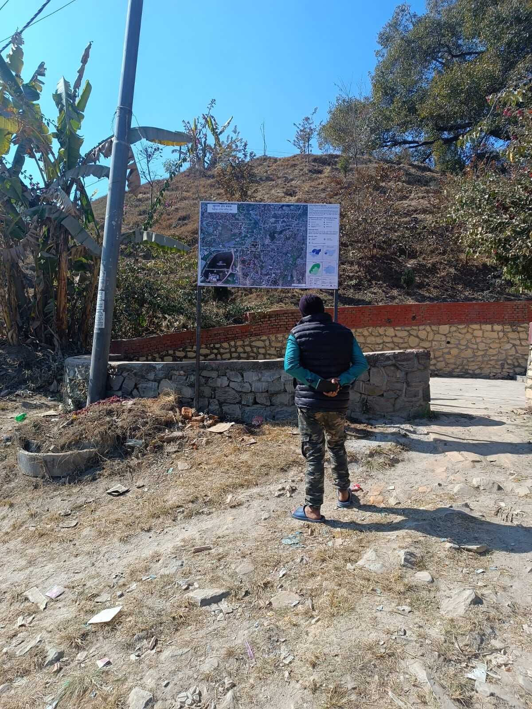
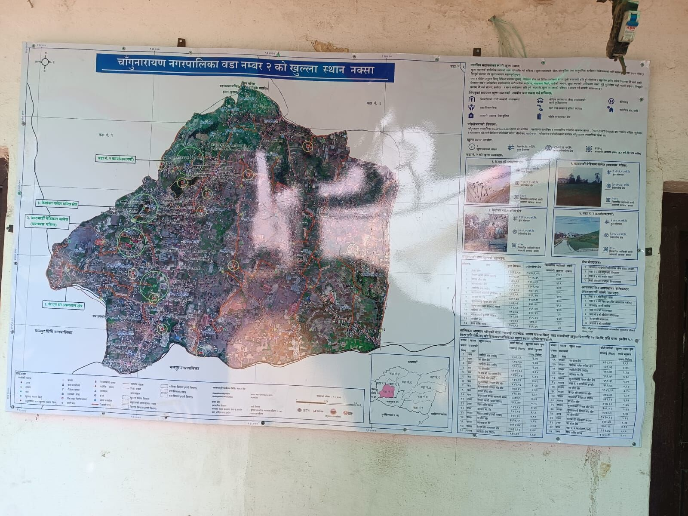
Work
These are a few examples of small to large-scale maps created by combining GIS technology (ArcGIS) and graphic design (Adobe Illustrator), which were also displayed in organizational programs, research papers, and government offices with the goal of effectively communicating information, assisting decision-making processes, and visually representing geographic data for a variety of purposes.


 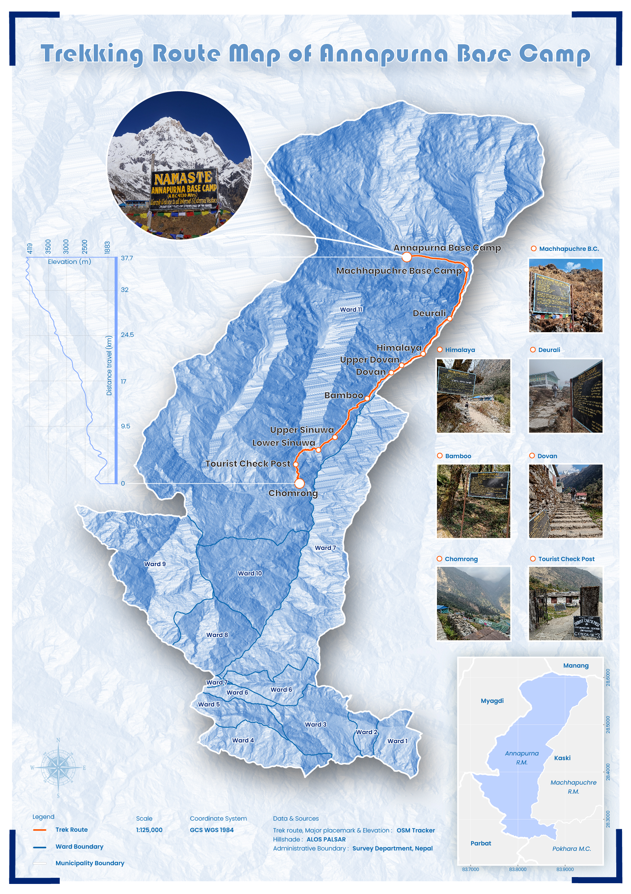
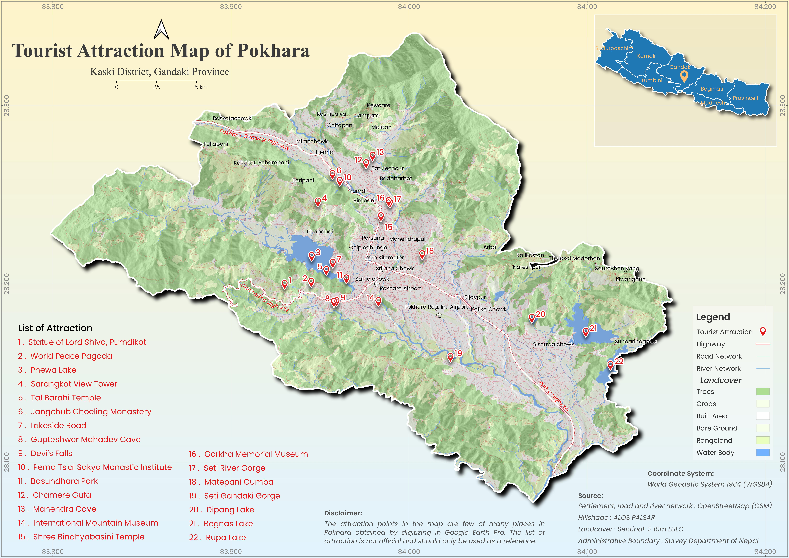
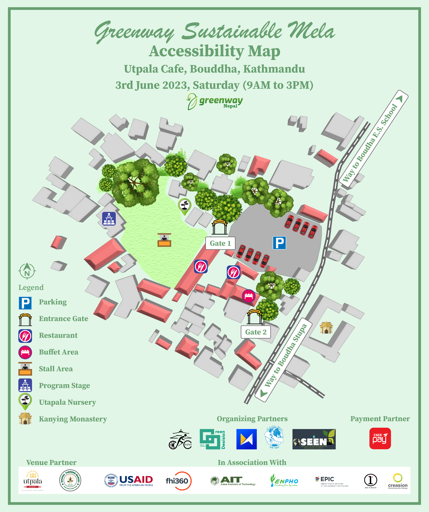
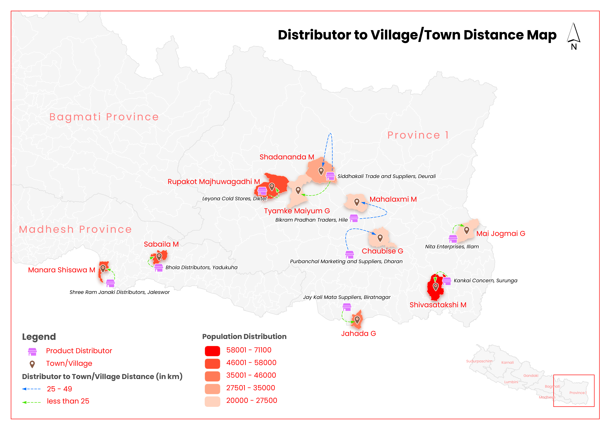
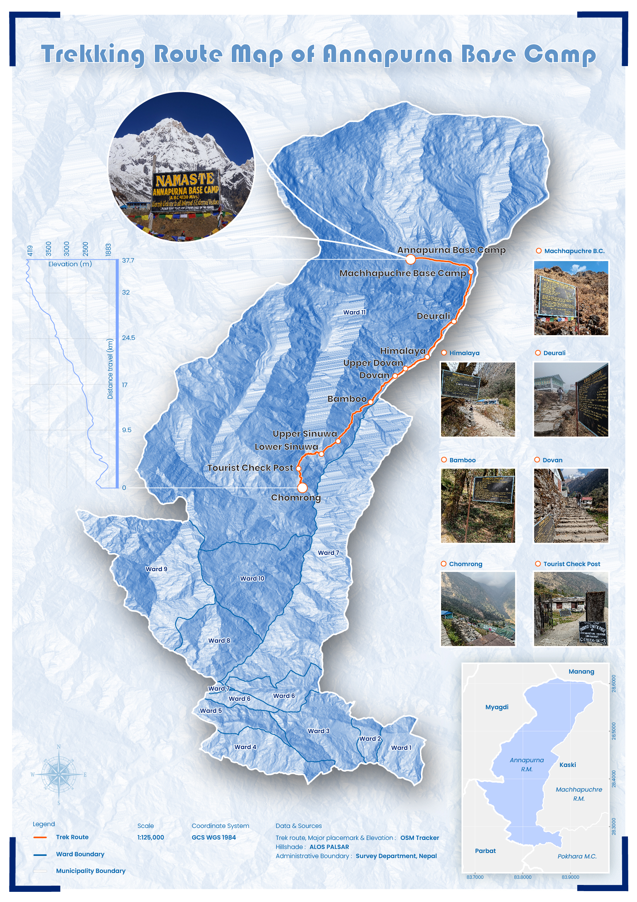
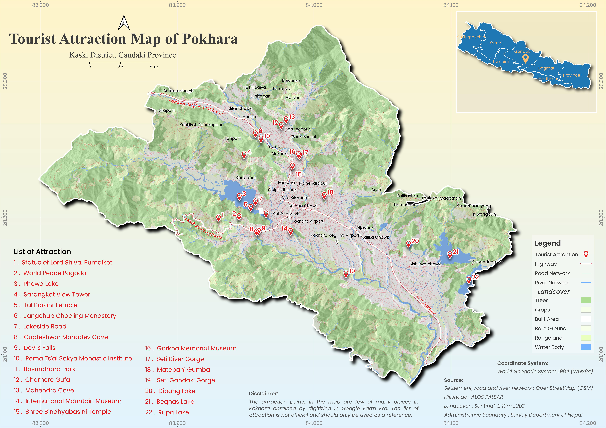
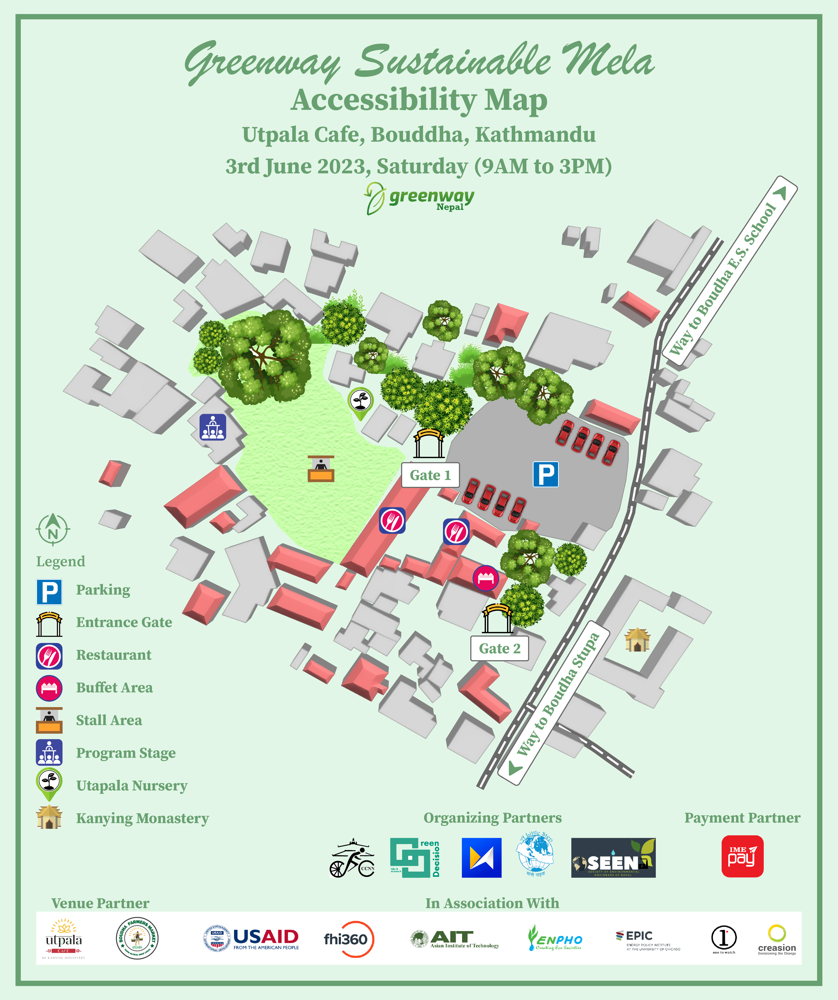
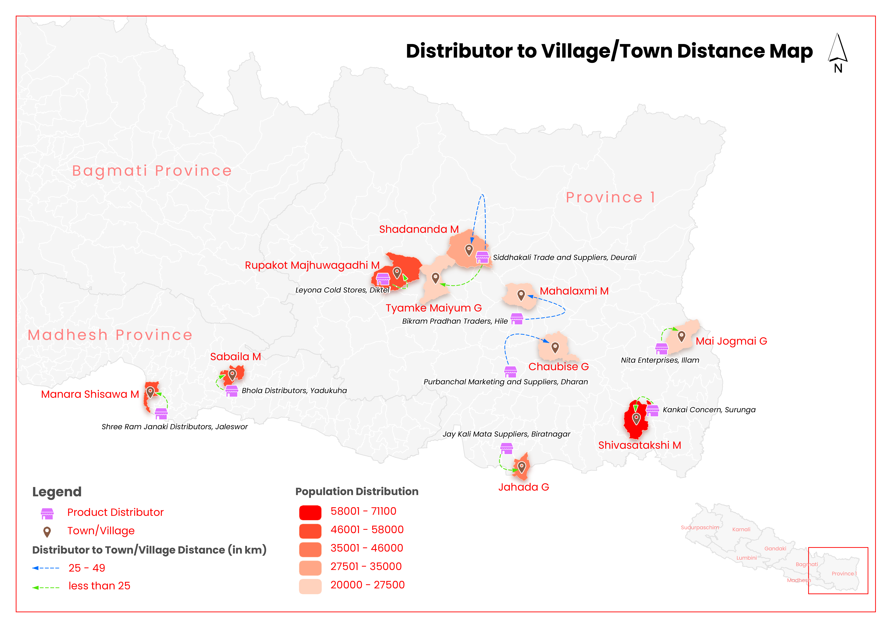
 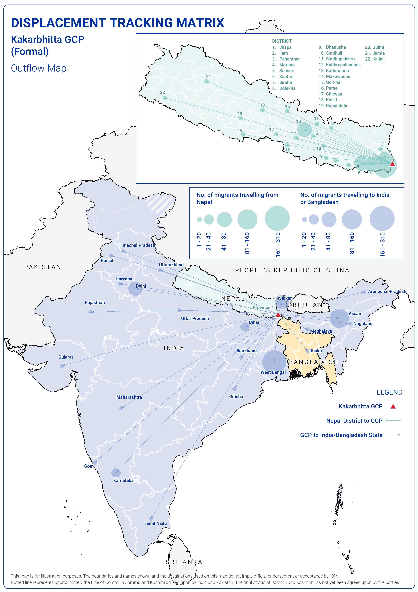
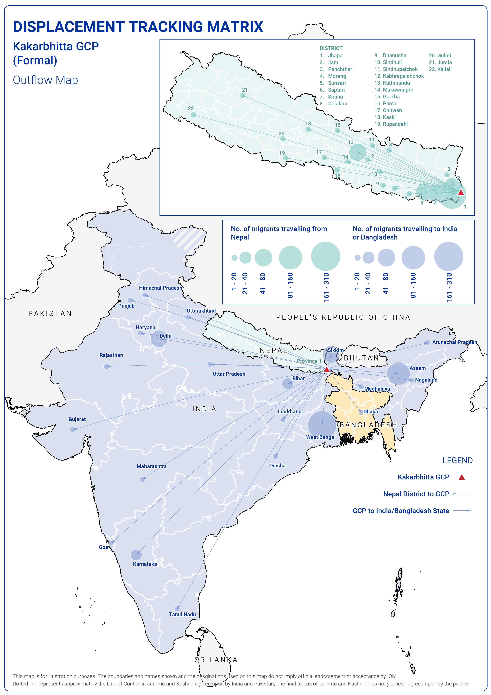

Skill
Geospatial Tools
ArcGIS Pro, ArcGIS, QGIS, AutoCAD, Google Earth Engine, Google Earth Pro
Programming Language
SQL, Python, Java, C++
Data Visualization Tools
Adobe Illustrator, Sketchup, Google Data Studio, Photoshop
OSM Tools
JOSM, Hot Tasking Manager, Hot OSM, OSM id editor
MS Office Suite
Excel, Docs, Power point....
Freelance & Contact